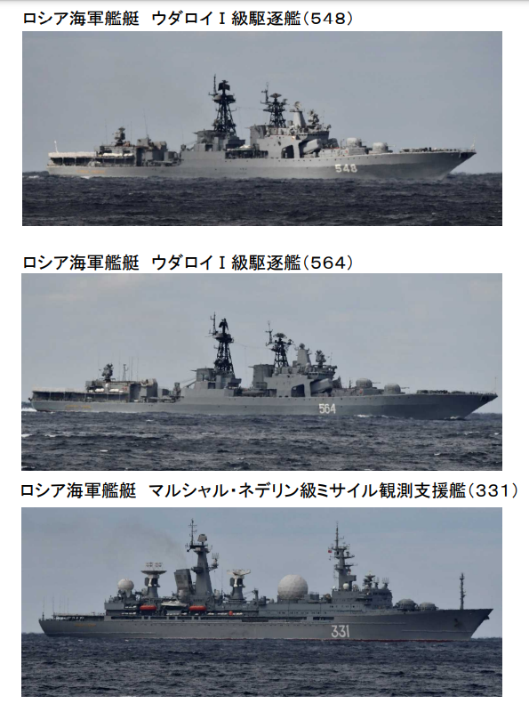

原标题：中俄浩浩荡荡大阵仗，日本第一次拍到！
日方首次拍到中俄海军舰艇群通过津轻海峡，驶向太平洋
日本防卫省10月18日发布消息称，中俄海军10艘舰艇通过津轻海峡， 向东驶向太平洋。并称，这是中俄海军舰艇首次同时通过津轻海峡。日方派出舰机进行情报收集和警戒监视，并发布了中俄舰艇群航行的现场 图片。
日本防卫省统合幕僚监部10月18日称，18日（星期一）上午8 点左右，日本海上自卫队在北海道奥尻岛西南方向展开行动。在110公里的海域范围内，发现中国海军的1艘055型驱逐舰（101舰）、1艘052型驱逐舰（172舰）、2艘054A型护卫舰（515舰、573舰）、1艘补给舰（902舰）和俄罗斯海军无畏级驱逐舰（548舰和564舰），两艘级护卫舰（335舰和339舰），一艘导弹观测舰（331舰）。随后这些军舰在津轻海峡向东航行，驶向太平洋。
日本防卫省称，其中的中国军舰曾于10月11日在马岛海峡西南海域被发现，并向东北航行穿过对马海峡。这也是首次发现中俄海军舰艇同时通过津轻海峡。
日本防卫省的消息显示，日本自卫队派出一架P-3C巡逻机以及两艘舰船进行情报收集和警戒监视。

据介绍，津轻海峡位于日本本州与北海道岛之间，是连接日本海与太平洋的重要水道，也是日本的重要海峡之一，所谓第一岛链北部的重要海峡。日本领海法规定这一海峡为特定海域，领海宽度为3海里，中部的专属经济区则为国际航道，各国舰船都可以无害通行。
来源：环球网/张海潮
责任编辑：刘德宾
关键字：日本 太平洋 海军舰艇